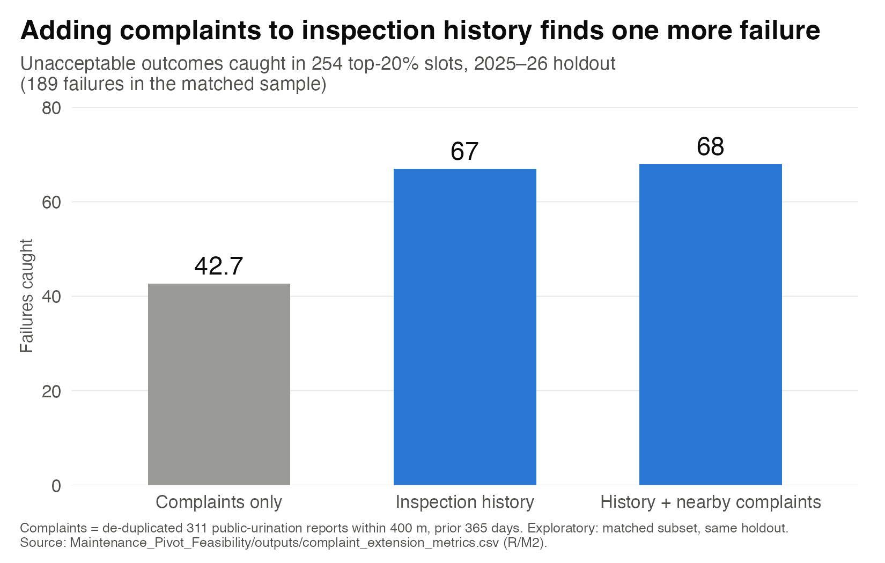

PMBA6093 · Analytics for Managers · Final project · proposed direction, for team discussion
Fix before you build
New York has set a target of 2,120 public restrooms by 2035 and has 975 today. Public data cannot prove where new ones are needed. It can show that the restrooms the City already has are failing inspection more often, and it can tell Parks where to check first. This version rebuilds the story around that.
How this differs from the current version: the ranking of neighbourhoods moves from the answer to a screen; the inspection record becomes the centre; a tested rule for where to send maintenance checks replaces the costed siting plan; every number here was re-derived independently before publishing. The table at the end of the Walkthrough compares the two section by section.
Walkthrough
The story in one breath: we set out to tell New York where to build restrooms. The data could point to places, but it could not prove need. While testing that, we found something the data could prove: the restrooms the City already has are failing inspection more often. So we asked a question the City can act on tomorrow: which of them should be checked first? The answer is a simple rule, and a way to test whether it works.
0 — Where we started
We began with the City's own problem. Local Law 58 of 2025 sets a target of 2,120 public restrooms by 2035. The City's register lists 975 as operational today, and only 8 of those are open 24 hours. All 8 are highway gas stations or a snack bar, not walk-in public toilets.
The timing makes the question urgent. The siting strategy under the law is reportedly due on 1 Nov 2026 (PIX11, Aug 2026; we have not found a primary document). A 17-unit modular pilot started in September: $4M, one year, open 7am–10pm.
So our first question was the obvious one: where should the new restrooms go?
1 — First, we looked for where need is
Data cleaning, negative binomial regression, out-of-sample validation, sensitivity check
To answer "where", we needed a measure of need. Nobody records "needed a toilet and could not find one", so we used the closest signal that is dated and mapped: 311 "Urinating in Public" complaints, 7,926 of them from 2020 to 2026.
The raw counts misled us straight away. The top 1% of addresses file 22.3% of all complaints, so a few repeat callers can put a neighbourhood at the top of the list. We counted each address once a month.
Busy places also produce more complaints simply because more people pass through. So we used a negative binomial regression to predict how many complaints each of 197 neighbourhoods should produce from its subway riders, workers, hotels and residents. Observed over expected became our need ratio.
The model passed its first test:
- It beats the simple benchmark. On neighbourhoods it never saw, it puts complaint hot spots in the right order better than subway ridership alone: rank correlation 0.79 against 0.70, winning 96% of 200 random 70/30 splits.
- Six neighbourhoods stand out. For each, there is a 95% probability that complaints run at least 1.5× what size and traffic predict: East Harlem (North), Astoria (East)–Woodside (North), East Elmhurst, Williamsbridge–Olinville, Brighton Beach, Midtown–Times Square.
Then it failed the second. We asked whether the complaints measure need or just who complains. People who file online are not spread evenly across the city, so we re-ranked on phone reports only (37% of complaints). Four of the six left the top 25:
| High-confidence area | Rank on phone reports only, of 197 |
|---|---|
| Brighton Beach | 2 |
| East Elmhurst | 5 |
| East Harlem (North) | 41 |
| Midtown–Times Square | 42 |
| Williamsbridge–Olinville | 50 |
| Astoria (East)–Woodside (North) | 121 |
Only 1 of the pilot's 17 units sits in any of the six.
What we learned: the ranking can tell the City where to look, but it cannot prove where need is. After many attempts, no dataset we found gets past this. Complaints are the best signal available, and they still measure complainers.
That left us with a narrower question. If we can't prove where people lack a restroom, can we at least show when they do?
2 — Next, we asked when access runs out
Hours parsing, distance by hour, complaint timing
The complaints themselves gave the first clue. They peak at 6pm, and 30% are filed between 6pm and midnight, which is when most restrooms have closed. So we took the 50 busiest subway hubs and measured, hour by hour, the distance to the nearest restroom that is actually open.

- At 2pm, 4 of the 50 have no restroom within 500 m. Those 4 have none at any hour.
- At 6pm it is 21 on winter hours, or 9 if park restrooms stay open to 8pm. 641 of 975 restrooms post the same placeholder hours, "8am–4pm, open later seasonally", so the season decides this figure.
- By 9pm it is 43, in either season.
Caveat: distances are straight-line, so real walks are longer.
What we learned: in the evening, the city's busiest places have almost nowhere to go. Longer hours would use restrooms the City already has. We don't claim that is the cheapest option; that depends on how staffing is costed.
This moved our attention from building new restrooms to the ones that already exist. If existing restrooms matter this much, how are they holding up?
3 — Then we looked at the restrooms New York already has
Panel data, facility fixed effects, balanced panel, difference-in-differences placebo
Here, for the first time, we had something that is recorded directly rather than inferred. NYC Parks inspectors grade every comfort station on a schedule, and 31,768 restroom ratings are on file. We compared the same January–June window across years.
The result was the clearest in the project: one in five Parks restrooms was rated unacceptable in January–June 2026, the highest rate since 2012.

| January–June | Rated unacceptable |
|---|---|
| 2012–14 | 21.2%, 17.0%, 20.0% |
| 2022–24 | 9.4%, 9.0%, 8.5% (the lowest on record) |
| 2025 | 11.3% |
| 2026 | 20.1% |
After a decade of improvement, the rate jumped by 11.6 percentage points from 2024 (95% CI +7.8 to +15.3), and it arrived as a step in January 2026, not a slow slide.
A result this sharp needed testing before we could trust it, so we tried to break it. Could a different mix of restrooms, the season, one harsh inspector or one borough explain it? None could:
- Same buildings. The 395 restrooms inspected in the first half of every year from 2022 to 2026 go from 5.9% to 18.1%. With facility fixed effects, 2026 is +11.4 pp above 2024.
- Not the season. Every month of 2026 is above the highest same-month rate of 2022–25.
- Not one inspector or borough. Remove any one inspector and 2026 stays at 18.8–21.8%; remove any one borough and it stays at 17.1–22.3%.
- Not late data entry. 96–100% of inspections are entered the same day.
The hardest objection was that inspectors might simply have become tougher. If so, they should be tougher on everything they rate. So we compared how the same inspectors, in the same months, rated parks that have no restroom. Those ratings did not move, while their restroom failure rates tripled or quadrupled:
| Inspector | Parks without a restroom, 2024 → 2026 | Restrooms, 2024 → 2026 |
|---|---|---|
| #45 | 7.9% → 8.3% | 6.5% → 27.3% |
| #62 | 7.6% → 8.1% | 6.2% → 21.6% |
| #31 | 12.0% → 12.4% | 7.1% → 23.5% |
| All parks without a restroom | 10.2% → 9.6% | — |
Within restrooms, structural failures roughly tripled (5.9% → 19.2%) while litter stayed flat (2.1% → 2.2%).
One detail changed how we read the result. About half the rise, 5.4 of the 11.6 points, is restrooms failed with nothing inside rated, which most likely means they were found closed or locked. That links straight back to the evening gap in section 2: a locked restroom is an hours and staffing problem as much as a repair one.
The cost side pointed the same way:
- 80 of 736 Parks comfort stations are under long-term closure, 46 of them for repairs.
- In the Parks capital tracker, the median new restroom is funded at about $4M and the median reconstruction at about $1.4–1.7M, depending on how price bands are counted. That is roughly two and a half reconstructions for one new build.
What we learned: need is hard to observe, but failure is not. The restrooms New York already has are failing more often, and keeping one open costs far less than building one.
Caveat: a restroom-specific change in rating guidance in January 2026 cannot be ruled out from the data. We plan to ask Parks.
That raised a practical question Parks can act on straight away. With limited crews, which stations should be checked first?
4 — So we tested whether history can predict the next failure
Train / validation / test split in time, logistic regression, classification trees, rule benchmarks, cluster bootstrap
We framed it as a decision Parks could make every six months: every January and July, which 20% of about 680 inspected sites get an extra maintenance check? Each list could use only records entered before that date, so the test never sees the future.
To keep ourselves honest, we fitted the models on older years, chose between them on 2024, froze that choice, and only then scored the most recent 18 months:
| Stage | Period | Rated outcomes | Unacceptable |
|---|---|---|---|
| Fit the models | 2018–2023 | 6,579 | 777 |
| Choose between them | 2024 | 1,170 | 130 |
| Test, choice frozen | 2025 and Jan–Jun 2026 | 1,685 | 244 |
The outcome was the rating at each site's next regular inspection. We compared random selection, simple history rules, four shallow classification trees and two logistic regressions.

| Method, 20% of sites, 411 check slots over three half-years | Recorded failures caught |
|---|---|
| Random selection, expected | 48.9 |
| Failure share in the last three inspections | 79.1 |
| Failure share over the last three years | 86.1 |
| Logistic regression, chosen on 2024 | 88.0 |
History clearly works: targeting by past inspections finds about 1.8 times as many recorded failures as chance, and it holds at a 10% and a 30% budget. What surprised us was how little the model added:
- The model adds nothing reliable. Against the three-year rule, the difference is −2.3 to +3.3 points (parent-park cluster bootstrap). Across nine reasonable logistic specifications the count ranges from 75 to 88. The trees found no useful split.
- The choice of rule matters. "Failed last time" captures only about 43% of the model's gain over random; the three-year failure share captures about 95%.
- A third of failures cannot be predicted from history. 88 of the 244 failures were at sites with a clean three-year record; no history-based list beats random there.
What this measures: failures the regular inspection would have recorded anyway. It shows better detection, not failures prevented. Section 6 sets out how to measure prevention.
What we learned: a transparent three-year rule does the job, and no model is needed. A spreadsheet can run it every January and July. Regular inspections still matter, because a third of failures arrive without warning.
Before recommending the rule, we checked what else might improve it, and what could undermine it.
5 — We then checked what else might help, and what could go wrong
Incremental predictive value, calibration, missing-data bias
The natural first idea was to bring the complaints back in. They did not help. On a matched subset of 254 check slots, inspection history alone catches 67 failures, history plus nearby 311 complaints catches 68, and complaints alone catch 42.7. This closes the loop with section 1: complaints measure street behaviour, not restroom condition.

Two further checks shaped how the rule should be used:
- The risk levels drift. Frozen after 2024, the model expected 12% of sites to fail their next check in January–June 2026; 20% did. The ranking still worked, but the levels must be refreshed every cycle.
- Some outcomes are unknown. 18% of eligible site-checks had no rating or no visit, and those skew towards riskier sites. We never counted a missing rating as a pass.
What we learned: the rule should run on inspection history alone, be refreshed every cycle, and sit on top of regular inspections, never replace them.
That still left the biggest open question: does an extra check actually prevent failures, or does it only find them sooner?
6 — Finally, we designed a way to test whether it works
Randomised experiment (A/B test), power, service metrics
No New York data yet links a check or a repair to a better next rating, and we could not estimate that effect from past data. So instead of claiming it, we propose building a test into the rule itself:
- Among the high-risk sites each half-year, randomly choose which get the extra check first.
- Compare their next rating and days closed with the sites checked later.
- Log what each check found and what was fixed, with dates.
The same logging lets the 17-unit pilot be judged on service: the hours each unit is found open and working, not the units installed.
What this gives the City: within a year, evidence of whether targeted checks prevent failures, not just find them.
7 — Where we landed: fix before you build
We started out asking where to build. The data could not prove it. It did show, through every test we could run, that the restrooms New York already has are failing more often, and that a simple rule can tell Parks where to look first. Our recommendation follows from that sequence:
| Who | Do this |
|---|---|
| NYC Parks | Every January and July, send extra checks to the top 20% of sites by three-year failure share. Keep the regular inspections. Randomise the order among high-risk sites and log the results |
| Parks, Mayor's Office, DOT | Extend evening hours near the busiest hubs, where 43 of 50 have nothing open within 500 m at 9pm, and staff to unlock restrooms found closed |
| Mayor's Office: LL58 strategy | Use the neighbourhood ranking as a screen. Verify on the ground before committing about $4M to a new building |
| All agencies | Publish verified open hours, closures and repair dates, so both the checks and the pilot can be judged |
8 — Current version and this draft, section by section
| Section | Current version | This draft |
|---|---|---|
| Core claim | Answers the City's four decisions: where, when, what first, how to measure the pilot | Need can't be proven; failure can. Protect the stock, and target checks by history |
| Where | The ranking is the answer; 29 areas costed | Same model, presented as a screen, with the phone-only limit up front |
| When | Evening access by area and hub | Kept; "cheapest" claim dropped |
| What first | "Stock is decaying"; repair as service quality; costed options for 29 areas | "Highest since 2012", after a record low; artefact tests and a stronger placebo; half the rise is likely closures |
| New | — | A tested rule for where to send checks: history catches 1.8× random; a model adds nothing |
| How to measure | Pilot power and an evening-hours trial | A randomised check order built into the rule; pilot judged on service |
| Course methods | Regression, panel, power analysis, cost analysis | Adds train / validation / test in time, logistic vs trees vs rules, bootstrap, calibration, A/B design |
9 — Questions for the professor
- Is a result of "better detection, not proven prevention", plus an experiment design, an acceptable main finding?
- Is it a strength or a weakness that a simple rule matches the logistic model?
- Should the complaint-based ranking stay in the presentation as a limit and a screen, or be cut to make room?
- How much method detail does a 12-minute talk need: the time split and the bootstrap, or just the result?
Limits and open questions
Every weakness of this draft in one place, starting with the questions that are still open.
Open questions: not yet resolved
- Did Parks change how it rates restrooms in January 2026? The jump arrives as a step that month. The same inspectors rated the rest of the park no worse, which rules out a general change in strictness, but not a restroom-only rule. The PIP rating manual or a question to Parks would settle it.
- Does an extra check prevent anything? The test measures failures the next regular inspection records anyway. Only the randomised design in section 6 can show prevention.
- Do reopened stations count towards 2,120? It is not yet checked whether the 80 long-term closed stations sit inside or outside the 975 listed as operational.
- Closed or broken? About half the 2026 rise is restrooms failed with nothing inside rated. "Found closed" is the likely reading, but it is not confirmed without the rating manual.
1. The failure jump is real, but its framing matters
- 2024 is the lowest January–June rate in 22 years of data, so "more than doubled since 2024" flatters the change. Against all of 2025 (11.6%), 2026 is about 1.7×.
- 2026 is back at 2012–14 levels. It reverses a decade of improvement; it is not unprecedented.
- "Structural failures quadrupled" holds only for the 7 inspectors who rated in both years. Across all inspectors they roughly tripled.
- A structural failure now fails the whole restroom only 20–29% of the time, against 44–61% in 2018–22. That fits either more minor defects or a lower bar for marking them; the data cannot separate the two.
2. The prediction is useful but modest
- Ranking quality (AUC) is 0.62–0.66 in the three test periods. With a 20% budget, most recorded failures still fall outside the list.
- The logistic model's 88 is its best case: nine reasonable specifications range from 75 to 88.
- The three-year rule was not the benchmark chosen on 2024; the last-three rule was. The three-year rule only matched the model in the test years.
- 43 sites fail in two or more of the three test periods and account for 91 of the 244 failures, so much of the gain is chronic sites recurring.
- Risk levels were too low in 2026 (12% predicted, 20% observed).
3. Missing outcomes
Of 2,050 eligible test site-periods, 324 had an unrated first visit and 41 had no visit: 17.8% unknown. Unrated visits cluster at higher-risk sites. We report recorded failures only and never count a missing rating as a pass.
4. Complaints measure complainers
The neighbourhood ranking predicts complaints, not need. Four of the six high-confidence areas leave the top 25 on phone reports alone. The ratio may also partly track street homelessness or nightlife, which the model does not control for.
5. Costs are funding figures, not outturn
The $4M new-build median is the midpoint the analysis assigns to the tracker's "$3–5 million" band. On exact-dollar projects only, the medians are $3.8M for a new build and $1.37M for a reconstruction.
6. Data dates and coverage
- Inspections end on 28 June 2026. Any list built from them is an illustration, not a current work order.
- Only Parks restrooms are inspected this way; libraries, transit and other operators are not covered.
- The restroom register was last updated in June 2025.
- Whether ratings are edited after entry cannot be tested from a single snapshot of the data.
Data and code
The draft uses the same cached datasets as the current version. Three groups of scripts sit in analysis/pivot/: the maintenance study, an independent replication of it, and a stress test of the failure trend.
Run it yourself
git clone https://github.com/JonathanWong1990/nyc-restroom-gap
cd nyc-restroom-gap/analysis/pivot
Rscript R/M1_maintenance_feasibility.R
Rscript R/M2_maintenance_context.R
Rscript R/M3_maintenance_verification.R # QA checks, charts, input checksumsThe M scripts read analysis/data_raw/ and write to analysis/pivot/outputs/. The check scripts were run against the project's working folders and may need their paths adjusted.
The maintenance study
| File | What it does |
|---|---|
maintenance_pivot_protocol.md | The design, written before any result was seen. Start here |
M1_maintenance_feasibility.R | Builds the site-by-half-year panel; fits, chooses on 2024 and tests on 2025–26 |
M2_maintenance_context.R | The complaint extension and the nearby-restroom context |
M3_maintenance_verification.R | Assertions on dates, keys and arithmetic; the charts |
maintenance_pivot_findings.md | Full results and limits |
outputs/ | Every result table, including all budgets, not just 20% |
Independent checks
| File | Verdict |
|---|---|
replication_report.md + R1–R6 | Replicates. Rebuilt from the raw inspection files without the study's code; 48.9 / 79.1 / 86.1 / 88 reproduced; no future information leaks in |
trend_report.md + T1–T5 | Holds, with caveats. Season, sample, inspector, borough, entry lag and time of day tested |
number_audit.md + audit_*.R | Every figure in the draft story re-derived; two corrected (8 open 24h; structural failures triple, not quadruple) |
Datasets used
- NYC Parks Inspection Program: inspections
mp8v-wjtf, inspection masteryg3y-7juh, sitesbuk3-3qpr, comfort stations9byw-znpj - Park structures
n8q6-i44s; public restroom registeri7jb-7jku - 311 service requests
erm2-nwe9, "Urinating in Public"